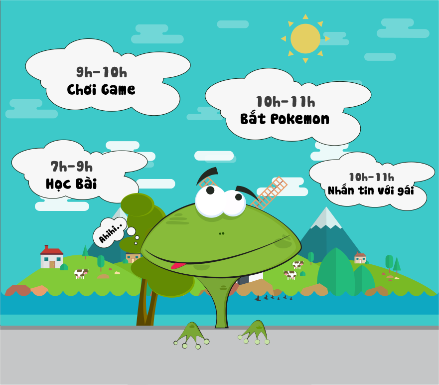
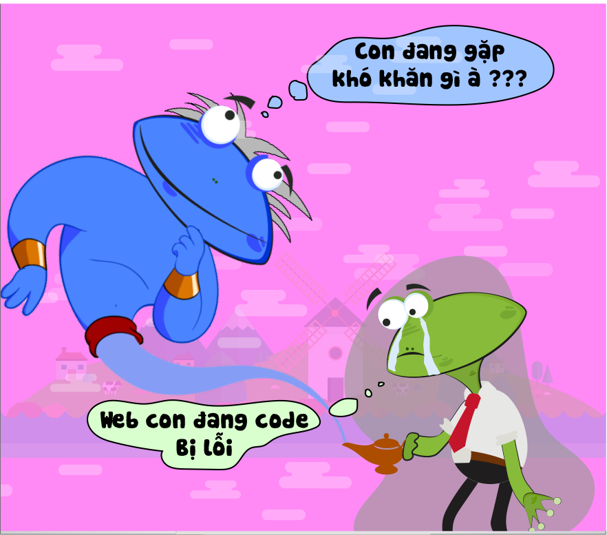
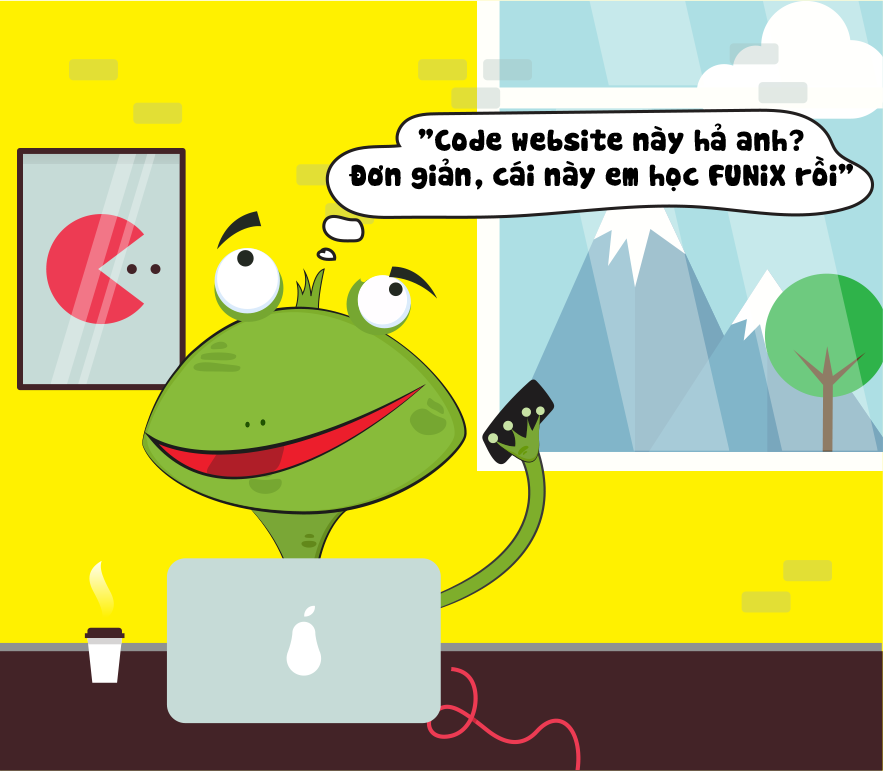
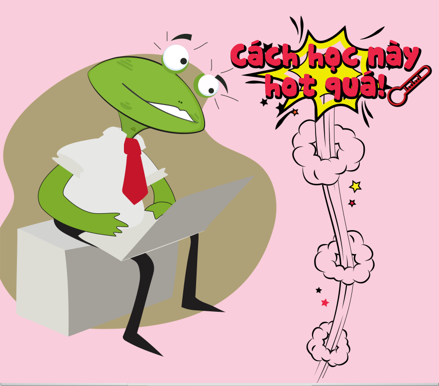
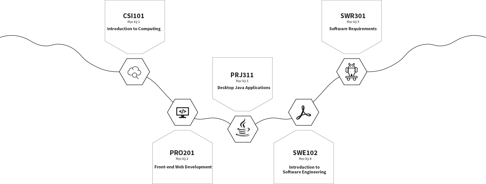
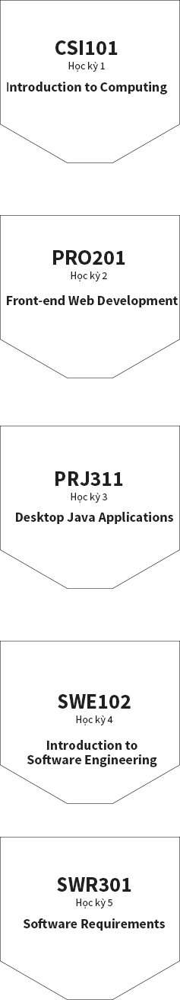

Cóc học Online
Bắt đầu từ kì Fall 2016, tất cả các Cóc chuyên ngành Kỹ sư phần mềm sẽ có thêm những trải nghiệm mới - "đi học trên mây". Mỗi kì sẽ có một môn học "trên mây". Không giảng đường, không bàn ghế, không sách giáo khoa, học thế nào được nhỉ?
Đại học trực tuyến FUNiX thuộc hệ thống FPT Education, cung cấp bằng Kỹ sư Phần mềm và các chứng chỉ nghề nghiệp lĩnh vực Công nghệ thông tin. Là trường đại học trực tuyến đầu tiên ở Việt Nam đào tạo bài bản và chuyên nghiệp.
Cập nhật thêm thông tin tại đây
Đại học trực tuyến FUNiX thuộc hệ thống FPT Education, cung cấp bằng Kỹ sư Phần mềm và các chứng chỉ nghề nghiệp lĩnh vực Công nghệ thông tin. Là trường đại học trực tuyến đầu tiên ở Việt Nam đào tạo bài bản và chuyên nghiệp.

Thời gian chủ động, linh hoạt
Đi học “trên mây” đồng nghĩa với việc bạn không phải đi học “trên mặt đất”
nữa. Không còn những buổi sáng cuống cuồng thức dậy để kịp giờ học. Đi muộn
mất điểm danh, hay không theo kịp bài học nữa. Học trên mây – học online cho
phép bạn chủ động sắp xếp thời gian, tranh thủ học mọi lúc mọi nơi, tiết kiệm
thời gian học để dành thời gian học cho n việc khác: kiếm gấu, chơi game,
hay bắt pokemon :v
nữa. Không còn những buổi sáng cuống cuồng thức dậy để kịp giờ học. Đi muộn
mất điểm danh, hay không theo kịp bài học nữa. Học trên mây – học online cho
phép bạn chủ động sắp xếp thời gian, tranh thủ học mọi lúc mọi nơi, tiết kiệm
thời gian học để dành thời gian học cho n việc khác: kiếm gấu, chơi game,
hay bắt pokemon :v

Cơ hội tiếp xúc với chuyên gia
Dẫn dắt 1 - 1 bởi chuyên gia trong ngành
Đi học “trên mây”, bạn còn được tiếp xúc với những “thiên thần” thực sự trong ngành công nghệ thông tin, đó là những mentor vừa là những kỹ sư phần mềm, vừa là những nhà tuyển dụng của các tập đoàn lớn. Các mentor luôn dõi theo và chỉ bảo bạn từng chút một nếu bạn có khúc mắc ở bất cứ đâu. Đã xa rồi những tháng ngày mòn mỏi đợi đến kỳ cuối mới được “on job training”, học online với FUNiX, bạn sẽ được tiếp xúc với những chuyên gia ngay từ kỳ đầu của đời đại học.

Kiến thức sát thực tế
Đi học “trên mây”, liệu kiến thức có “trên mây”? Hoàn toàn không! Học với các chuyên gia trong ngành công nghệ thông tin, đồng thời là những nhà tuyển dụng, nên chương trình học của bạn sẽ vô cùng sát với thực tế, học được là làm được!

Phương pháp học HOT
Đi học “trên mây”, bạn đang được trải nghiệm phương pháp học HOT nhất trên thế giới! Các khóa học đại trà trực tuyến mở (Massive Open Online Course - MOOC) đã phát triển rầm rộ ở nhiều nước, và nay bạn đã có cơ hội trải nghiệm tại Việt Nam! Mỗi môn học sẽ bao gồm tài liệu, hướng dẫn, các đoạn phim bài giảng chất lượng cao và chuyên nghiệp do nhiều giáo sư của các trường ĐH danh tiếng tham gia. Ngoài ra còn có các bài tập hay bài kiểm tra giúp người học tăng cường việc hiểu và nhớ bài. Tính mở của khóa học còn thể hiện ở khả năng gắn kết và tương tác giữa người dùng - học viên, giảng viên, trợ giảng - qua hình thức diễn đàn trao đổi.
Học Online ngày ấy và bây giờ
Đi học “trên mây” đồng nghĩa với việc bạn không phải đi học “trên mặt đất” nữa.
Học Online ngày ấy và bây giờ
Đi học “trên mây” đồng nghĩa với việc bạn không phải đi học “trên mặt đất” nữa.
Học Online ngày ấy và bây giờ
Đi học “trên mây” đồng nghĩa với việc bạn không phải đi học “trên mặt đất” nữa.
Các môn học trên mây


Mối quan hệ xã hội
(cơ hội) Mở rộng mạng lưới công việc